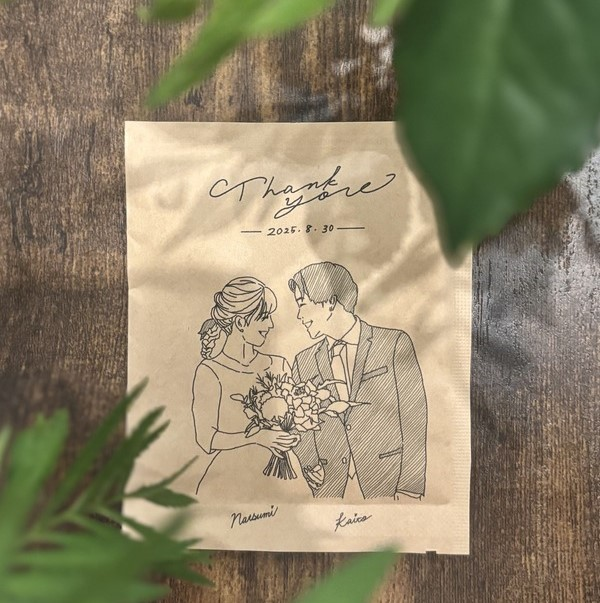
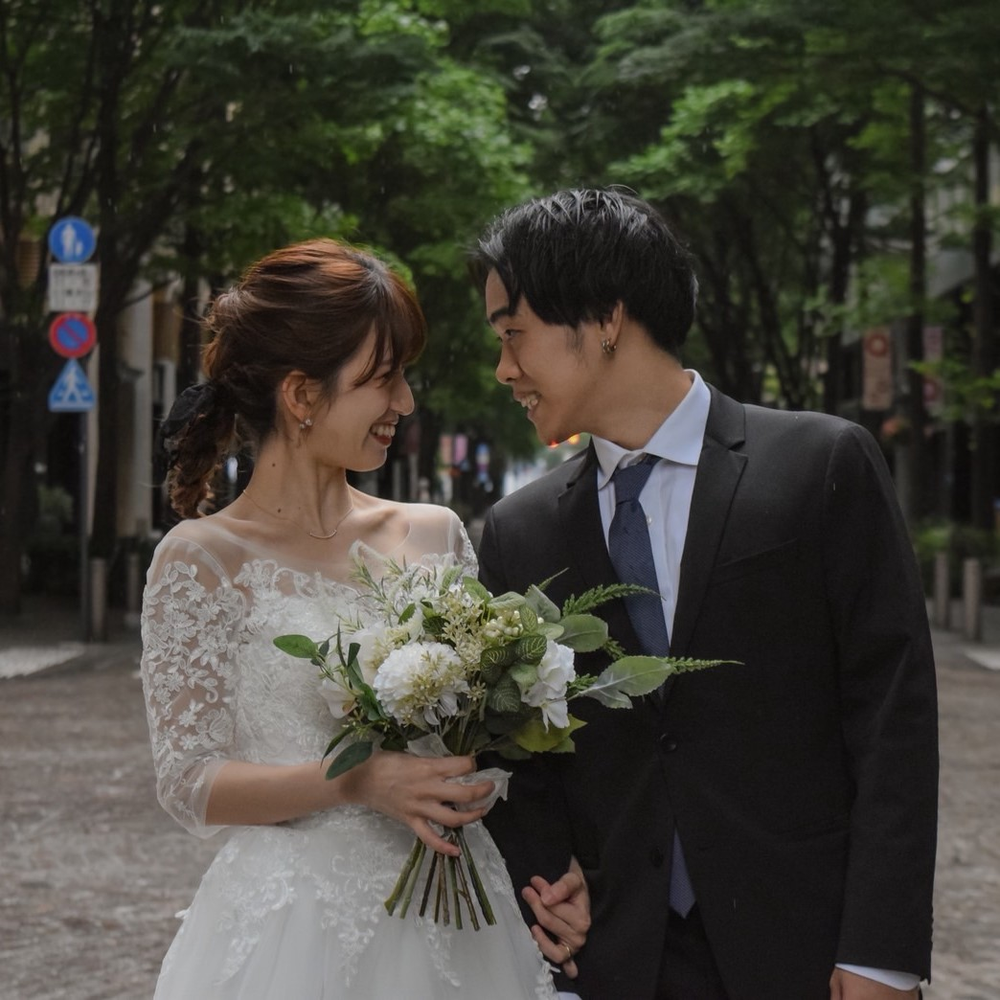
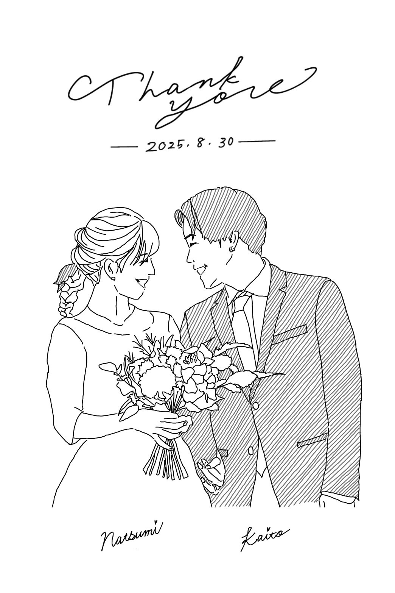

コーヒーが繋いだ
ご縁に感謝を込めて
特別な一杯を
私たち夫婦の出会いのきっかけであり、
今では共通の趣味となった「コーヒー」
いつかオリジナルブレンドを作成し
感謝の気持ちと共に皆様にお届けする
それが私たちの小さな夢でした
こだわりが詰まったオリジナルブレンド
ぜひご自宅でゆっくりお楽しみください
0830ブレンド

・ Ethiopia natural
七海のお気に入りの豆
明るい家庭をイメージ
・ Costa rica washed
ポジティブな国民性
スターバックスとのリンク
2種類を中浅煎りでのブレンド
エチオピアのベリーの風味と、
コスタリカのシトラスの風味を
バランスよく感じられる
浅煎りでも酸味が強くなく飲みやすい1杯
パッケージのイラストは...


イラストを描いてくれたのは
新婦のアルバイト時代の後輩であり、
新郎と大学の同期でもある西舘桃子さん！
また、イラストの元となっている写真は
新婦の後輩の竹山憧さんと山本可鈴さんが
撮ってくれました！
Special Thanks!!
今回のオリジナルブレンドを
実現することができたのは
はのさんのご協力のおかげです
はのさんが私たちの想いを丁寧に汲み取り
仕上げてくださいました
はのさん
もともとは苦手だったコーヒー
そんなコーヒーの美味しさに出会い、
今では届ける側へ
浅煎りも深煎りも、
豆の個性を大切に丁寧に焙煎し、
たくさんの人に"美味しい"を届けている